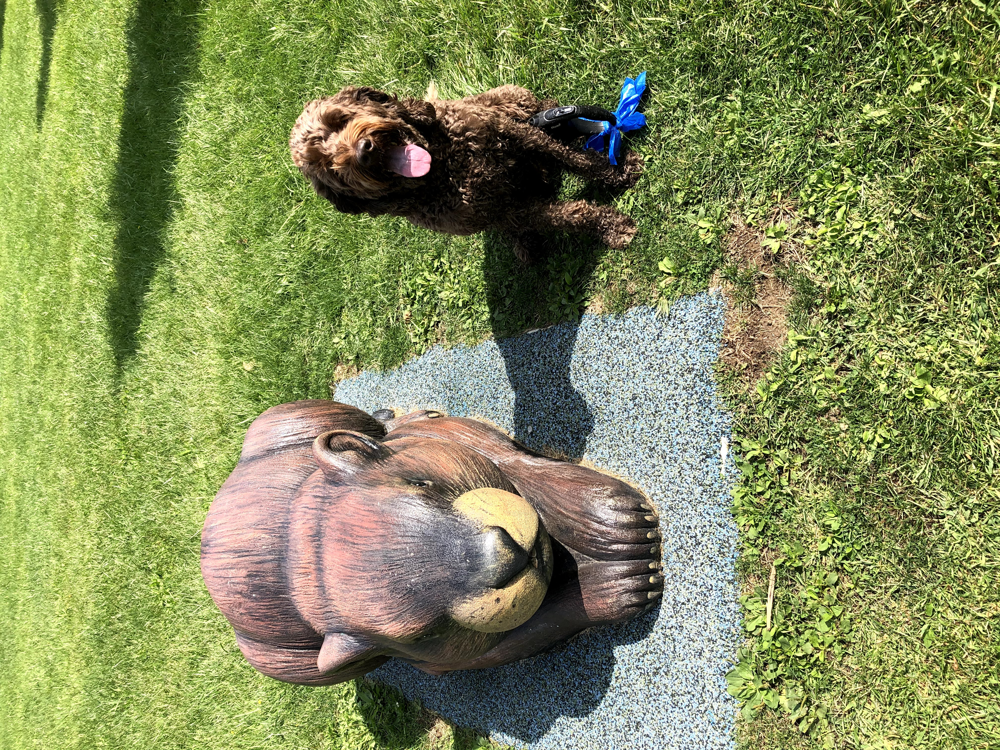

Neighborhood Color
Look for blossoms, garden planters, and tree-lined roads.
This small journal collects spring walks, riverside views, blooming trees, and easy ideas for getting outside with a camera and a little curiosity.

Look for blossoms, garden planters, and tree-lined roads.
Rivers, cascades, and lake reflections add calm to a walk.
Use natural light and take a few steps closer to your subject.